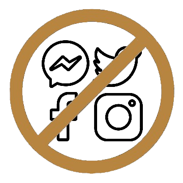
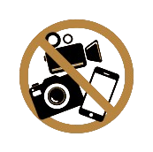

Zsuzsi & Gaben
|
Nap |
Óra |
Perc |
Helyszín |
Dátum |
Program |
|
Geréby Kúria Hotel és Lovasudvar Katinka terem |
2026. 06. 20. |
15:45 Vendégvárás
16:30 Szertartás 17:00 Fotózkodás 18:00 Lakodalom |
Szeretnénk, ha minden jelenlévő kötetlenül tudna szórakozni. Ezért kérjük - amennyiben meg tudod oldani - gyermekeidet ne hozd magaddal.
|  |
Kérjük a nap folyamán NE FOTÓZZ, NE VIDEÓZZ! Inkább éld meg a pillanatot. A nagy nap során profi fotós és videós csapatunk is velünk tart, akik mindent megörökítenek. Ne aggódj, nem maradsz le semmiről! A képeket az esemény után mindenkinek elküldjük. Kérjük az eseményről NE POSZTOLJ az interneten! Szeretnénk privát személyes emlékként megőrizni ezt a napot és ha úgy érezzük az emlékeket mi magunk közzétenni, másokkal megosztani. |
 |
Kérjük érkezz elegánsan, az alkalomnak megfelelően. A legfontosabb mégiscsak az, hogy tudj majd benne
táncolni.
A piros, fehér, fekete színeket a hagyományokhoz híven kérjük kerüld.
Allergiás vagyok, mire figyeljek?
ÉTELALLERGIÁD kérjük időben jelezd a visszajelző íven és a vacsora rendelésénél arra figyelemmel leszünk. A kúria kertjében számos virágzó növény található és az őket beporzó rovarok. A kert nem telepített, szabadon megteremhet bármi. Érdemes az ALLERGIAGYÓGYSZERED magaddal hozni! A helyszínen továbbá lovak találhatóak - szénanáthások figyelem.
Milyen nászajándéknak örülne az ifjú pár?
Ha szeretnél megajándékozni minket, akkor kérjük, azt anyagiak formájában tedd, mert azt tudjuk a legjobban hasznosítani. Minden nekünk szánt kedvességet előre is köszönünk!
Mikor tudom odaadni a nászajándékot?
A hagyományoktól eltérően nem lesz menyasszonytánc, így a nekünk szánt ajándékot, gratulációt a szertartás után, egy közös fotó készítésével egybekötve tudod majd átadni. Erre a célra asztalt és dobozt is helyezünk majd ki, ceremónia mesterünk pedig mindenkit név szerint szólít majd a fotózkodáshoz.
Hoznék némi háztáji süteményt, itókát, vihetek?
A szertartás előtt és a vacsora alatt is bőséges választékkal készülünk, erre ne legyen gondod.
A kis kedvencem velem jöhet?
Kérjük kisállatod ne hozd magaddal.
Mikor tudunk közös képet készíteni?
A szertartás után profi fotósaink fognak gondoskodni minden egyéni és csoportos kép elkészítéséről.
Gyerekkel érkeznék, mire számíthatok?
A kúria kertjében játszótér várja a legkisebbeket és a park is sok lehetőséget rejt a kalandszerzésre. A lovas kifutó szintén izgalmas látványt nyújthat számukra. A legjobb mégiscsak az, ha a kedvenc (1db) játékuk velük van. Kérjük ne hagyjátok a gyerekeket egyedül játszani a kertben, a medencék vagy a tó körül és ügyeljetek rá, hogy ne zavarják a nap eseményeit. A vacsorához magasított gyerekülés igényeteket a visszajelző íven tüntethetitek fel.
Honnan fogom tudni, hogy mikor, mi történik és hova kell menni?
Ceremóniamesterünk fogja mindig mondani a hasznos információkat, kérjük hallgass rá. Tőle és a koszorúslányoktól bármikor kérdezhetsz. Ezenkívül a kihelyezett táblákról és a honlapon található programból tájékozódhatsz.